2D
Tilemap x Sprite Renderer
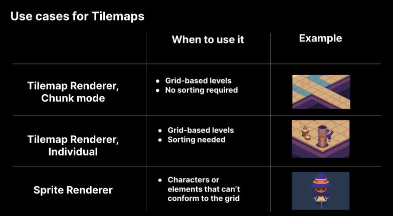
Tilemap
Vykreslit a nastavit barvu na dlaždici
Important
Z nějakého důvodu kód funguje pouze pokud je to takto oddělený.
public void GenerateTilemap(int width, int height, Color color)
{
// Delete all tiles
this.ClearTiles();
for (int x = 0; x < width; x++)
for (int y = 0; y < height; y++)
{
this.Tilemap.SetTile(new(x, y, 0), this.TileBase);
}
for (int x = 0; x < width; x++)
for (int y = 0; y < height; y++)
{
this.Tilemap.SetColor(new(x, y, 0), color);
}
}
Pravidla pro Tilemap
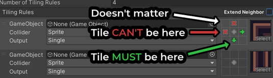
Velikost obrázku
Definice velikostí
Note
Používají se mocniny čísla 2.
Například: 16x16 px, 32x32 px, 64x64 px, 128x128 px, 256x256 px, 512x512 px, atd...
16x16 px
- Ikony a jednoduché grafiky
- Používá se pro základní UI prvky a malé ikony.
- Vzdálenost od kamery: Velmi daleko, nedůležitý detail.
32x32 px
- Malé UI prvky
- Ideální pro malé ikony a základní grafiky v uživatelském rozhraní.
- Vzdálenost od kamery: Velmi daleko, nedůležitý detail.
64x64 px
- Menší objekty
- Vhodné pro objekty s mírným detailem, jako jsou malé herní prvky.
- Vzdálenost od kamery: Střední vzdálenost, detail je stále mírně rozmazaný.
128x128 px
- Střední objekty
- Dobré pro středně velké herní prvky a detaily v prostředí.
- Vzdálenost od kamery: Blízká vzdálenost, viditelný detail.
256x256 px
- Větší objekty a detailní textury
- Používá se pro detailnější objekty a textury v herním prostředí.
- Vzdálenost od kamery: Střední až blízká vzdálenost, detailní zobrazení.
512x512 px
- Velmi detailní objekty
- Vhodné pro blízké záběry a detailní textury.
- Vzdálenost od kamery: Blízká vzdálenost, vysoká úroveň detailu.
1024x1024 px
- Velké objekty a textury
- Ideální pro velmi detailní textury a objekty z blízka.
- Vzdálenost od kamery: Velmi blízká vzdálenost, extrémní detail.
2048x2048 px a více
- Maximální detail
- Nejvyšší kvalita textur pro extrémně detailní objekty a prostředí.
- Vzdálenost od kamery: Extrémně blízká vzdálenost, maximální detail.
Nastavení velikosti
Například obrázek o velikosti 64x64 pixelů.
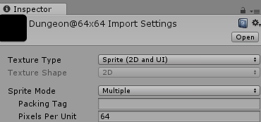
Warning
Pixel Per Unit (PPU) - kolik pixelů je na jednotku v Unity.
Určuje velikost Sprite
Je důležité nastavit dle velikosti grafiky, aby byla správně zobrazena.
Například pro obrázky o velikosti 256x256 pixelů ve sprite sheet, použijeme PPU 256 na sprite sheet.
Příklad:
Vytvořit dlaždici o velikosti 1x1 jednotka.
Pokud nastavíte PPU na 32, pak sprite o rozměrech 32x32 dokonale zabere celou dlaždici (1x1).
Nyní chcete dlaždici 2x2, pak byste nastavili PPU 16, takže pro každou jednotku použije 16 pixelů ze spritu. (16 / 32 = 2 jednotky).
Například pro dlaždici o velikosti 1x2, pokud byste nastavili PPU 32, tak by rozměr obrázku byl 32x16 px. (32/32 = 1, 32/16=2) px
Pro více informací zde.
Animace obrázku
Hloubka (Depth) u kostí
Important
Ovlivňuje pořadí vykreslení vybraného Sprite (Sprite Mesh).
Příklad:
Pokud máte levou paži (arm L), která je ovlivněna třemi kostmi.
Nastavíte například hloubku jedné z kostí forearm_l na -5, zatímco ostatní kosti budou mít hloubku 0.
Tak se tato forearm_l vykreslí pod ostatními částmi tohoto Sprite Mesh.
Otevřít
Sprite EditorPřepnout do
Skinning EditorNote
Aktivovat
Visibility, pokud není aktivníNastavit u kostí
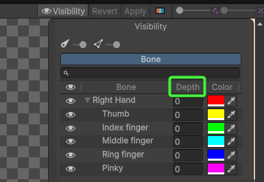depth
Univerzální Rigging
Otevřít
Sprite EditorPřepnout do
Skinning EditorNote
Aktivovat
Visibility, pokud není aktivníVytvořit kosti (bones)
Nastavit Geometry a Weights
Important
Pokud se nevykresluje barevně část, která je ovlivněna kostí, může to být způsobeno tímto nastavením:
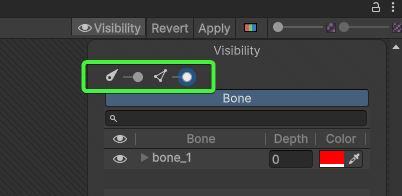Ujistěte se, že máte oba posuvníky posunuté úplně do prava.
Zkopírovat rig 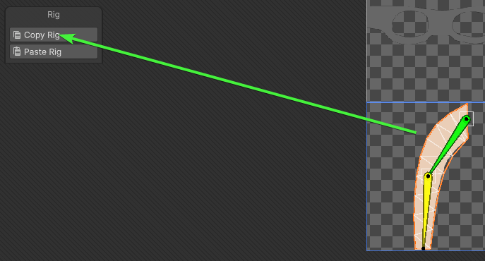
Otevřít nový sprite
Vložit rig 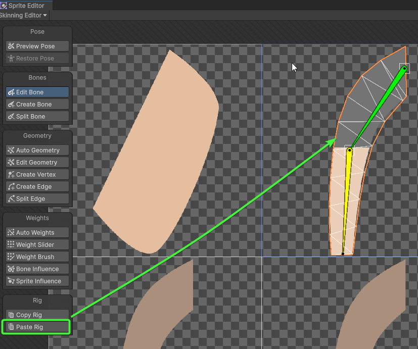
Řešení chyb při vykreslování sprite
Important
Na kameře musí být přidána komponenta Pixel Perfect Camera pro 2D
Zabraňuje deformacím, rozmazání a trhání obrazu
Černé čáry
Problém, viz. níže:
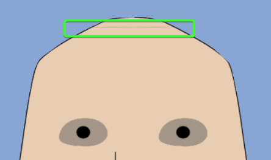Řešení:
Zkontrolujte obrázek, zda je správně umístěn.
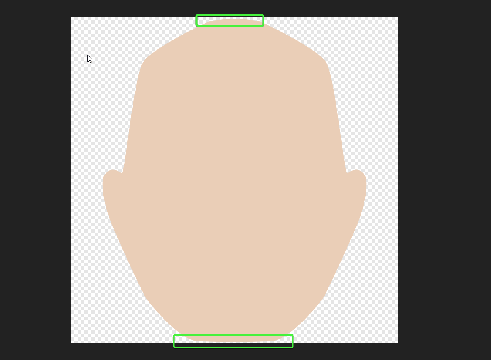Note
Upravit obrázek hlavy, aby byla umístěna uvnitř rozsahu
Caution
Takto vypadá špatně umístěný obrázek v dokumentu
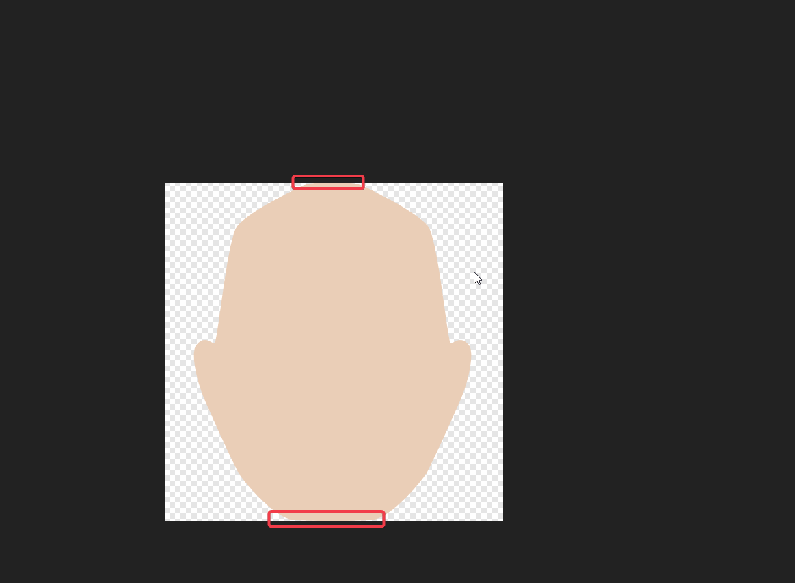Nastavit padding v
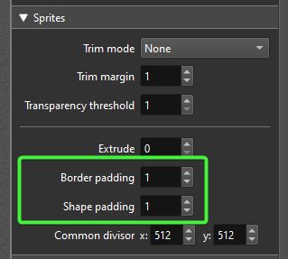TexturePackerNote
Pomůže zabránit problémům, jako je "bleeding" efekt. (Přetekání obrázku přes okraje.)
Nastavte libovolnou velikost výplně, která bude větší než 0 pro:
Border padding
Mezera kolem okrajů celého
sheetu.Note
Pomáhá předejít vizuálním artefaktům (nechtěným chybám jako jsou rozmazání nebo barevné okraje) na okrajích
sheetu.Shape padding
Mezera mezi jednotlivými
spritesnasheetu.Note
Zabraňuje vzájemnému překrývání a nežádoucím vlivům mezi jednotlivými
sprites.
Tip
Objeví-li se později znovu černé čáry, stačí zvýšit velikost výplně (padding)
Problikávání
Zkontrolujte měřítko v herním okně, že je nastaveno na 1x
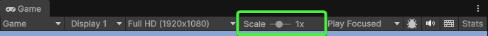